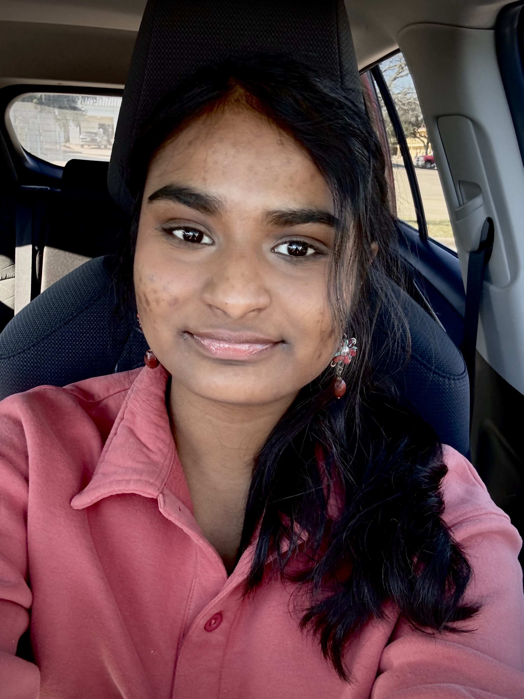

Julia Arukakkal
Hello, my name is Julia Arukakkal. I’m from Plano, TX. I am a junior undergraduate at Texas A&M University studying Computer Science. I am interested in areas such as data analytics and bioinformatics. I want to use my knowledge in computer science to help the public.
Hobbies
Crafts:
- Crochet
- Linoleum Printing
- Drawing
- Painting
- Photography
Reading:
- Run with the Wind by Shion Miura – A compelling story about rediscovering passion for running.
- Anne of Green Gables – A comfort book from my childhood.
- Atomic Habits – Small changes every day lead to big changes.
My Accessibility Interests
Dementia Schedule App
I want to create an app for dementia patients that provides gentle reminders in familiar voices to maintain a consistent schedule. The app would use visual, auditory, and vibrating cues for accessibility.
Pushing Support for Unbiased Data
One of the biggest dangers in research and machine learning is using an undiverse dataset, leading to bias. I want to support efforts like this research study to quantify undiverse datasets and push for more diverse data representation.